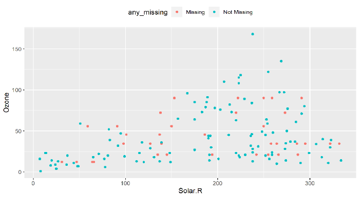
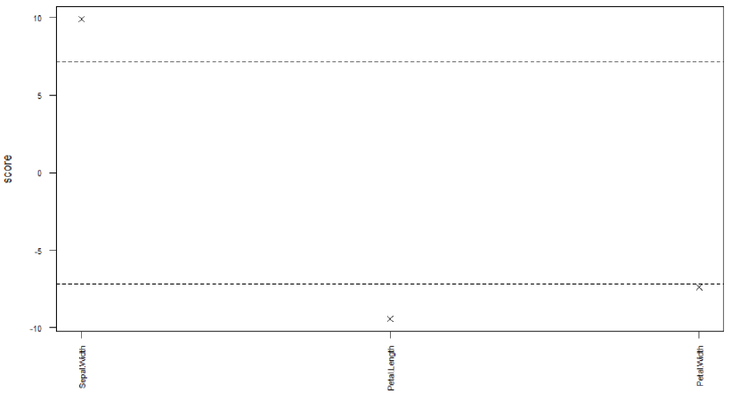
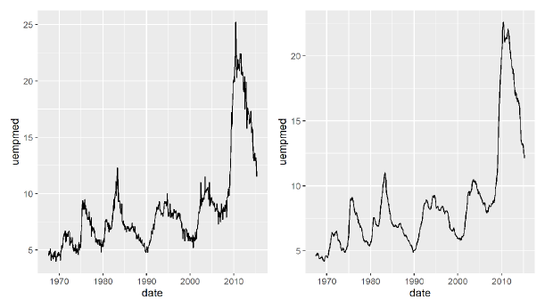
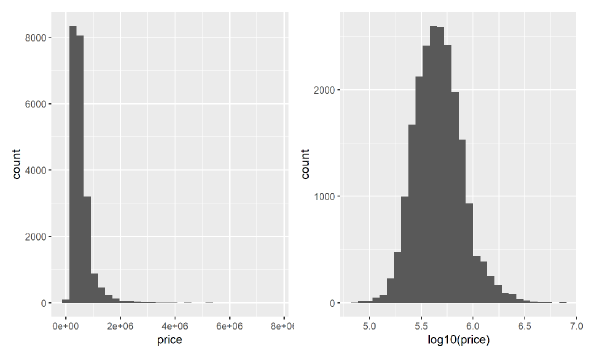
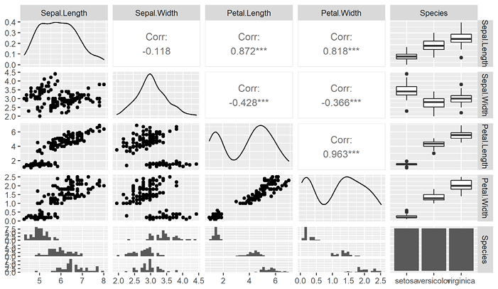

第 5 探索性数据分析
探索性数据分析（Exploratory Data Analysis，EDA）注重数据的真实分布，通过可视化、变换和建模探索数据，发现数据中隐含的规律，并据此寻找适合数据的模型。
教材把 EDA 概括为一个迭代循环：
- 拟定关于数据的问题；
- 通过可视化、变换和建模寻找问题答案；
- 根据结果改进原问题，或提出新的问题。
本章严格按照教材第五章，依次讨论数据清洗、特征工程和变量关系探索。数据清洗与特征工程也是机器学习中的数据预处理环节。
5.1 数据清洗
数据清洗用于处理缺失、重复、异常、逻辑错误、不一致数据和冗余变量等质量问题。教材指出，数据质量会直接影响模型效果，数据清洗常常占据数据挖掘或机器学习工作的大部分时间。
5.1.1 缺失值
R 用 NA 表示缺失值。NA 占据一个元素位置，但该位置的值未知；NULL 表示空值，不占据元素位置。若数据用 9999 等特殊值代替缺失，应先用 naniar::replace_with_na() 转换成 NA。
Code
# NA 参与一般数值计算时，结果仍然是 NA。
mean(c(1, 2, NA, 4))
#> [1] NA
# na.rm = TRUE 表示计算前移除缺失值。
mean(c(1, 2, NA, 4), na.rm = TRUE)
#> [1] 2.3333335.1.1.1 探索缺失值
5.1.1.1.1 缺失模式
教材区分三种缺失模式：
- 完全随机缺失（MCAR）：缺失是否发生与自身变量和其他变量都无关；
- 随机缺失（MAR）：缺失与自身变量无关，但与其他变量有关；
- 非随机缺失（MNAR）：缺失是否发生与变量自身有关。
naniar::mcar_test() 实现 Little’s MCAR 检验，原假设为数据属于 MCAR。
Code
# airquality 是教材使用的空气质量数据。
# mcar_test() 检验其缺失是否可视为完全随机缺失。
mcar_result <- mcar_test(airquality)
mcar_result教材结果的 P 值约为 0.00142，小于 0.05，因此拒绝 MCAR 原假设。
Code
# 每列代表一个变量，每行代表一个观测；深色单元格表示缺失。
vis_miss(airquality)
Figure 5.1: 教材图 5.1：airquality 数据框的缺失情况。
5.1.1.1.2 缺失值统计
Code
# 分别计算教材列出的四个总体缺失指标。
tibble(
指标 = c("缺失值总数", "完整值总数", "含缺失行占比", "含缺失列占比"),
结果 = c(
n_miss(airquality),
n_complete(airquality),
prop_miss_case(airquality),
prop_miss_var(airquality)
)
)Code
# 按每一行的缺失个数从多到少排序；讲义显示前 8 行。
miss_case_summary(airquality) |>
slice_head(n = 8)Code
# 汇总“每行缺失几个值”的行数和比例。
miss_case_table(airquality)Code
# 逐列统计缺失个数和缺失比例。
miss_var_summary(airquality)Code
# 汇总具有相同缺失个数的变量数量。
miss_var_table(airquality)Code
# 横轴是变量，纵轴是缺失个数。
gg_miss_var(airquality)
Figure 5.2: 教材图 5.2：airquality 各变量的缺失值个数。
5.1.1.1.3 对比缺失与非缺失数据
影子矩阵与原数据维数相同，用 NA 和 !NA 标记相应元素是否缺失。bind_shadow() 将影子矩阵并到原数据右侧，使缺失状态可以参与分组与绘图。
Code
# 为每个原始变量增加对应的缺失标记变量。
aq_shadow <- bind_shadow(airquality)
# 展示前 6 行，观察 Ozone_NA、Solar.R_NA 等影子变量。
aq_shadow |>
slice_head(n = 6)Code
aq_shadow |>
# 根据 Ozone 是否缺失分成两组。
group_by(Ozone_NA) |>
# 比较两组 Solar.R 的均值、标准差、方差、最小值和最大值。
summarise(
mean = mean(Solar.R, na.rm = TRUE),
sd = sd(Solar.R, na.rm = TRUE),
var = var(Solar.R, na.rm = TRUE),
min = min(Solar.R, na.rm = TRUE),
max = max(Solar.R, na.rm = TRUE),
.groups = "drop"
)Code
aq_shadow |>
ggplot(aes(Temp, color = Ozone_NA)) +
# 两条曲线分别表示 Ozone 缺失与非缺失观测的温度分布。
geom_density(linewidth = 1) +
labs(x = "温度", y = "概率密度", color = "Ozone 是否缺失")
Figure 5.3: 教材图 5.3：根据 Ozone 是否缺失，对比 Temp 的分布。
5.1.1.2 插补缺失值
若样本数据足够且缺失样本比例较小，可以删除缺失观测；否则需要根据变量类型和缺失机制选择插补方法。
Code
# 删除 airquality 中任意变量存在缺失的行。
airquality_complete <- airquality |>
drop_na()
# 对比删除前后的行数，让删除操作产生可核对结果。
tibble(
数据 = c("原始数据", "删除缺失行后"),
行数 = c(nrow(airquality), nrow(airquality_complete))
)教材还给出按缺失比例删除行或列的通用写法。下面仍使用教材的 airquality 数据执行相同规则。
Code
# 仅保留缺失比例低于 60% 的行。
rows_under_60 <- airquality %>%
filter(pmap_lgl(., ~ mean(is.na(c(...))) < 0.6))
# 仅保留缺失比例低于 60% 的列。
cols_under_60 <- airquality |>
select(where(~ mean(is.na(.x)) < 0.6))
# 输出保留后的维度，作为筛选结果反馈。
tibble(
操作 = c("按行筛选", "按列筛选"),
保留行数 = c(nrow(rows_under_60), nrow(cols_under_60)),
保留列数 = c(ncol(rows_under_60), ncol(cols_under_60))
)5.1.1.2.1 单重插补
教材先介绍均值、中位数和众数插补，再介绍 simputation 的模型插补语法 impute_<模型>(dat, formula, ...)。
Code
aq_mean_imputed <- airquality |>
group_by(Month) |>
# 在每个月内部，用该月 Ozone 均值替换 Ozone 缺失值。
mutate(Ozone = naniar::impute_mean(Ozone)) |>
ungroup()
# 输出插补前后的 Ozone 缺失个数。
tibble(
数据 = c("插补前", "分组均值插补后"),
Ozone缺失数 = c(
sum(is.na(airquality$Ozone)),
sum(is.na(aq_mean_imputed$Ozone))
)
)Code
library(simputation)
# 按 Month 分组，用组内中位数插补 Ozone。
impute_median(airquality, Ozone ~ Month)
# 用 Solar.R、Wind 和 Temp 建立线性模型预测 Ozone；
# add_residual = "normal" 在预测值上增加正态随机误差。
impute_lm(
airquality,
Ozone ~ Solar.R + Wind + Temp,
add_residual = "normal"
)
# 用决策树模型插补 Ozone，并区分原始值与插补值。
airquality |>
bind_shadow() |>
as.data.frame() |>
impute_cart(Ozone ~ Solar.R + Wind + Temp) |>
add_label_shadow() |>
ggplot(aes(Solar.R, Ozone, color = any_missing)) +
geom_point() +
theme(legend.position = "top")
Figure 5.4: 教材图 5.4：决策树插补及插补效果。
5.1.1.2.2 多重插补
多重插补创建多个数据副本，分别完成插补，再综合多个数据集上的分析结果。教材使用 mice() 的预测均值匹配方法生成 5 个插补数据集。
Code
library(mice)
# m = 5 生成 5 个插补数据集；maxit = 10 表示最多迭代 10 次；
# method = "pmm" 使用预测均值匹配；print = FALSE 关闭过程输出。
aq_imp <- mice(
airquality,
m = 5, maxit = 10, method = "pmm",
seed = 1, print = FALSE
)
# complete() 从多重插补对象中提取完整数据。
aq_dat <- mice::complete(aq_imp)
# 完整数据的总缺失数应为 0。
naniar::n_miss(aq_dat)5.1.2 异常值
异常值是与其他取值或观测相距较远的数据点。它们可能来自记录错误，也可能正是研究目标，例如异常交易。教材给出的常见处理方式是直接剔除，或替换为 NA 后再插补。
5.1.2.1 单变量的异常值
教材使用三种规则：
- 标准差法：近似正态时，将均值正负 3 个标准差之外的值视为异常；
- 百分位数法：将指定上下百分位数之外的值视为异常；
- 箱线图法：将 \(Q_1-1.5IQR\) 与 \(Q_3+1.5IQR\) 之外的值视为异常。
Code
univ_outliers <- function(
x, method = "boxplot", k = NULL,
coef = NULL, lp = NULL, up = NULL
) {
# 根据 method 选择教材中的一种阈值计算规则。
switch(
method,
"sd" = {
if (is.null(k)) k <- 3
mu <- mean(x, na.rm = TRUE)
sigma <- sd(x, na.rm = TRUE)
LL <- mu - k * sigma
UL <- mu + k * sigma
},
"boxplot" = {
if (is.null(coef)) coef <- 1.5
Q1 <- quantile(x, 0.25, na.rm = TRUE)
Q3 <- quantile(x, 0.75, na.rm = TRUE)
iqr <- Q3 - Q1
LL <- Q1 - coef * iqr
UL <- Q3 + coef * iqr
},
"percentiles" = {
if (is.null(lp)) lp <- 0.025
if (is.null(up)) up <- 0.975
LL <- quantile(x, lp, na.rm = TRUE)
UL <- quantile(x, up, na.rm = TRUE)
}
)
# 找出低于下限或高于上限的元素位置。
idx <- which(x < LL | x > UL)
# 同时返回异常值、索引和数量。
list(
outliers = x[idx],
outlier_idx = idx,
outlier_num = length(idx)
)
}Code
# 教材以 mpg$hwy 为例，分别运行三种异常值规则。
x <- mpg$hwy
boxplot_outliers <- univ_outliers(x)
sd_outliers <- univ_outliers(x, method = "sd")
percentile_outliers <- univ_outliers(x, method = "percentiles")
# 整理成一张表，比较异常值个数、取值和位置。
tibble(
方法 = c("箱线图法", "标准差法", "百分位数法"),
异常值个数 = c(
boxplot_outliers$outlier_num,
sd_outliers$outlier_num,
percentile_outliers$outlier_num
),
异常值 = c(
toString(boxplot_outliers$outliers),
toString(sd_outliers$outliers),
toString(percentile_outliers$outliers)
),
索引 = c(
toString(boxplot_outliers$outlier_idx),
toString(sd_outliers$outlier_idx),
toString(percentile_outliers$outlier_idx)
)
)5.1.2.2 多变量的异常值
5.1.2.2.1 局部异常因子法与聚类法
局部异常因子（LOF）比较样本与邻近样本的局部密度；聚类法根据样本在聚类结构中的异常程度排序。
Code
library(DMwR2)
# 使用 iris 的前 4 个连续变量计算 LOF；k = 10 表示使用 10 个邻居。
lofs <- lofactor(iris[, 1:4], k = 10)
# 按 LOF 从大到小选择最异常的 5 个样本索引。
order(lofs, decreasing = TRUE)[1:5]
# 教材结果：42, 107, 23, 16, 99。
# 用聚类算法给出异常概率，并查看概率最高的 5 个样本。
rlt <- outliers.ranking(iris[, 1:4])
sort(rlt$prob.outliers, decreasing = TRUE)[1:5]教材的聚类异常概率最高的样本依次为 36、42、107、58 和 61。
5.1.2.2.2 基于模型的异常值
Code
# 教材以 mtcars 建立 mpg 关于 wt 的一元线性回归。
outlier_model <- lm(mpg ~ wt, data = mtcars)
# outlierTest() 对学生化残差执行 Bonferroni 异常值检验。
car::outlierTest(outlier_model)
#> No Studentized residuals with Bonferroni p < 0.05
#> Largest |rstudent|:
#> rstudent unadjusted p-value Bonferroni p
#> Fiat 128 2.537801 0.016788 0.5372教材结果没有发现 Bonferroni 校正后 P 值小于 0.05 的学生化残差。
5.1.2.2.3 随机森林法检测异常值
outForest 根据每个变量的袋外预测误差构造异常得分，并可以用非异常观测的预测值替换异常值。
Code
library(outForest)
# 在 iris 中按 2% 的比例随机生成异常值。
iris_with_out <- generateOutliers(iris, p = 0.02, seed = 123)
# 检测 Sepal.Length 之外数值变量中的异常值，每列最多报告 3 个。
out <- outForest(
iris_with_out,
. - Sepal.Length ~ .,
max_n_outliers = 3,
verbose = 0
)
# 输出异常值位置、观测值、预测值、RMSE、得分与替换值。
outliers(out)
# 绘制各变量的异常值得分。
plot(out, what = "scores")
Figure 5.6: 教材图 5.6：各变量的随机森林异常值得分。
5.2 特征工程
特征工程通过缩放、变换或降维，把原始变量转换为更适合分析或建模的特征。本节保留教材中的特征缩放、非线性与正态性变换、连续变量离散化和主成分分析。
5.2.1 特征缩放
5.2.1.1 标准化
标准化为 \(z=(x-\bar{x})/s\)，使变量均值约为 0、标准差约为 1。scale(x, scale = FALSE) 只做中心化。
Code
# 继续使用教材前面定义的 mpg$hwy。
x <- mpg$hwy
# scale() 默认先中心化再除以标准差；只显示前 6 个结果。
standardized_x <- scale(x)
head(standardized_x)
#> [,1]
#> [1,] 0.9336964
#> [2,] 0.9336964
#> [3,] 1.2695687
#> [4,] 1.1016326
#> [5,] 0.4298879
#> [6,] 0.4298879
# scale = FALSE 只减去均值，不除以标准差。
centered_x <- scale(x, scale = FALSE)
head(centered_x)
#> [,1]
#> [1,] 5.559829
#> [2,] 5.559829
#> [3,] 7.559829
#> [4,] 6.559829
#> [5,] 2.559829
#> [6,] 2.559829Code
# 用均值和标准差验证标准化结果。
tibble(
指标 = c("均值", "标准差"),
标准化结果 = c(mean(standardized_x), sd(standardized_x))
)5.2.1.2 归一化
正向归一化把数据线性映射到区间 \([a,b]\)；负向归一化映射到同一区间，但反转大小顺序。
Code
rescale <- function(x, type = "pos", a = 0, b = 1) {
# 计算原变量的最小值和最大值，忽略缺失值。
rng <- range(x, na.rm = TRUE)
# 正向映射保留次序；负向映射反转次序。
switch(
type,
"pos" = (b - a) * (x - rng[1]) / (rng[2] - rng[1]) + a,
"neg" = (b - a) * (rng[2] - x) / (rng[2] - rng[1]) + a
)
}Code
iris_rescaled <- as_tibble(iris) |>
# 将全部数值变量归一化到 [0, 100]，Species 保持因子类型。
mutate(across(where(is.numeric), rescale, b = 100))
# 输出前 6 行作为归一化结果。
iris_rescaled |>
slice_head(n = 6)5.2.1.3 行规范化
行规范化把每个样本的连续特征向量除以自身的 \(L_2\) 范数，使每行向量长度为 1。
Code
iris_row_normalized <- iris[1:3, -5] |>
# pmap_dfr() 每次把一行的 4 个数传给匿名函数。
pmap_dfr(~ {
row_values <- c(...)
# 用该行的 L2 范数除整行。
row_values / norm(as.matrix(row_values), "2")
})
iris_row_normalizedCode
# 再计算每行的 L2 范数；结果应接近 1。
iris_row_normalized %>%
mutate(L2范数 = pmap_dbl(., ~ norm(as.matrix(c(...)), "2")))5.2.1.4 数据平滑
教材对 economics$uempmed 做五点移动平均，即当前位置前后各取两个观测计算均值。
Code
library(slider)
library(patchwork)
p1 <- economics |>
ggplot(aes(date, uempmed)) +
geom_line()
p2 <- economics |>
# .before = 2、.after = 2 构成以当前观测为中心的五点窗口。
mutate(uempmed = slide_dbl(uempmed, mean, .before = 2, .after = 2)) |>
ggplot(aes(date, uempmed)) +
geom_line()
# 并排显示原始序列和平滑序列。
p1 | p2
Figure 5.7: 教材图 5.7：原始序列与五点移动平均后的序列。
5.2.2 特征变换
5.2.2.1 非线性特征
多项式特征把原变量的平方或更高次幂加入数据，为模型表达非线性关系提供新的输入。
Code
library(tidymodels)
polynomial_features <- recipe(hwy ~ displ + cty, data = mpg) |>
# 对两个预测变量生成二次多项式特征；raw = TRUE 使用原始幂次。
step_poly(all_predictors(), degree = 2, options = list(raw = TRUE)) |>
prep() |>
# 返回训练数据转换后的特征表。
bake(new_data = NULL)
polynomial_features教材输出包含 hwy、displ_poly_1、displ_poly_2、cty_poly_1 和 cty_poly_2 五列；第一行的 displ 为 1.8，其二次项为 3.24。
5.2.2.2 正态性变换
教材比较 kc_housing$price 原始分布与 log10(price) 分布。若原始数据包含零或负数，不能直接取对数或平方根，需要先按教材公式平移。
Code
# kc_housing 来自 mlr3data；教材用直方图对比变换前后的价格分布。
housing <- mlr3data::kc_housing
p1 <- ggplot(housing, aes(price)) +
geom_histogram()
p2 <- ggplot(housing, aes(log10(price))) +
geom_histogram()
p1 | p2
Figure 5.8: 教材图 5.8：房价原始分布与对数变换后的分布。
Box–Cox 变换适用于正值数据；Yeo–Johnson 也允许零和负值。教材用最大似然选择 Yeo–Johnson 变换参数 \(\lambda\)。
Code
library(bestNormalize)
set.seed(123)
# 从 Gamma 分布生成教材示例数据。
x <- rgamma(100, 1, 1)
# 自动选择 Yeo–Johnson 变换的最佳 lambda。
yj_obj <- yeojohnson(x)
yj_obj$lambda
# 教材结果约为 -1.0336。
# predict() 完成正向变换；inverse = TRUE 再变换回原尺度。
p <- predict(yj_obj)
x2 <- predict(yj_obj, newdata = p, inverse = TRUE)5.2.2.3 连续变量离散化
教材以 hyper.xlsx 的年龄变量为例，用等距分箱生成 3 个年龄区间，再把分组转换为虚拟变量。
Code
library(rbin)
# 读取教材高血压数据。
hyper <- read_xlsx("../data/ch05/hyper.xlsx")
# 按 age 的取值范围等距分成 3 组。
bins <- hyper |>
rbin_equal_length(hyper, age, bins = 3)
# 创建离散变量与对应虚拟变量，并查看前 3 行。
rbin_create(hyper, age, bins) |>
head(3)教材前三行的年龄分别为 58、50、56；离散化后同时得到年龄组和三个 0–1 指示变量。
5.2.3 特征降维
主成分分析把多个相关连续变量线性组合为少数互不相关的主成分。教材先标准化 iris 的数值变量，再保留累计解释比例达到 85% 的主成分。
Code
library(tidymodels)
iris_pca <- recipe(~ ., data = iris) |>
# PCA 对变量尺度敏感，因此先标准化全部数值变量。
step_normalize(all_numeric()) |>
# 保留累计解释方差达到 85% 的主成分。
step_pca(all_numeric(), threshold = 0.85) |>
prep() |>
bake(new_data = NULL)
iris_pca教材结果保留 Species、PC1 和 PC2 三列，即四个连续测量变量被压缩为两个主成分。
5.3 探索变量间的关系
教材根据变量类型选择探索方法：两个分类变量使用复式条形图、列联表和卡方检验；分类变量与连续变量使用分组分布、汇总和方差分析；两个连续变量使用相关系数与散点图矩阵。
5.3.1 两个分类变量
教材研究 Titanic 乘客的船舱等级 Pclass 与是否生存 Survived 的关系。
Code
# 读取教材的 Titanic 个体级数据，并查看变量结构。
titanic <- read_rds("../data/ch05/titanic.rds")
glimpse(titanic)
#> Rows: 891
#> Columns: 11
#> $ Survived <fct> No, Yes, Yes, Yes, No, No, No, No, Yes, Yes, Yes, Yes, No, No…
#> $ Pclass <fct> 3, 1, 3, 1, 3, 3, 1, 3, 3, 2, 3, 1, 3, 3, 3, 2, 3, 2, 3, 3, 2…
#> $ Name <chr> "Braund, Mr. Owen Harris", "Cumings, Mrs. John Bradley (Flore…
#> $ Sex <fct> male, female, female, female, male, male, male, male, female,…
#> $ Age <dbl> 22, 38, 26, 35, 35, 28, 54, 2, 27, 14, 4, 58, 20, 39, 14, 55,…
#> $ SibSp <int> 1, 1, 0, 1, 0, 0, 0, 3, 0, 1, 1, 0, 0, 1, 0, 0, 4, 0, 1, 0, 0…
#> $ Parch <int> 0, 0, 0, 0, 0, 0, 0, 1, 2, 0, 1, 0, 0, 5, 0, 0, 1, 0, 0, 0, 0…
#> $ Ticket <chr> "A/5 21171", "PC 17599", "STON/O2. 3101282", "113803", "37345…
#> $ Fare <dbl> 7.2500, 71.2833, 7.9250, 53.1000, 8.0500, 8.4583, 51.8625, 21…
#> $ Cabin <chr> "", "C85", "", "C123", "", "", "E46", "", "", "", "G6", "C103…
#> $ Embarked <fct> S, C, S, S, S, Q, S, S, S, C, S, S, S, S, S, S, Q, S, S, C, S…Code
titanic |>
ggplot(aes(Pclass, fill = Survived)) +
# position = "dodge" 把生存和未生存条形并排显示。
geom_bar(position = "dodge") +
labs(x = "船舱等级", y = "人数", fill = "是否生存")
Figure 5.9: 教材图 5.9：不同船舱等级的生存与未生存人数。
Code
# 构造船舱等级 × 是否生存的二维列联表。
titanic_table <- table(titanic$Pclass, titanic$Survived)
titanic_table
#>
#> No Yes
#> 1 80 136
#> 2 97 87
#> 3 372 119
# Cramer's V 衡量两个分类变量关联强度。
rstatix::cramer_v(titanic_table)
#> [1] 0.3398174
# 比例检验和卡方检验判断不同船舱等级的生存比例是否相同。
rstatix::prop_test(titanic_table)Code
rstatix::chisq_test(titanic_table)教材得到 Cramer’s V 约为 0.340，卡方检验 P 值远小于 0.05，说明船舱等级与是否生存存在统计关联。
5.3.2 分类变量与连续变量
教材比较 mpg 中不同驱动方式 drv 的发动机排量 displ。
Code
mpg |>
ggplot(aes(displ, color = drv)) +
# 每个 drv 水平绘制一条概率密度曲线。
geom_density(linewidth = 1) +
labs(x = "发动机排量", y = "概率密度", color = "驱动方式")
Figure 5.10: 教材图 5.10：不同驱动方式下发动机排量的概率密度。
Code
mpg |>
group_by(drv) |>
# 五数汇总返回最小值、Q1、中位数、Q3 和最大值。
get_summary_stats(displ, type = "five_number")Code
mpg |>
# 检验三种驱动方式的平均发动机排量是否相同。
anova_test(displ ~ drv)教材结果的 P 值约为 \(3.03\times10^{-34}\)，拒绝三组均值相同的原假设。
5.3.3 两个连续变量
相关系数用于衡量两个连续变量的线性相关程度。取值范围为 \([-1,1]\)：符号表示方向，绝对值表示线性相关强弱。相关系数接近 0 只表示缺少线性相关，不能据此断言两个变量毫无关系。
Code
iris_correlations <- iris[-5] |>
# 计算四个连续变量两两之间的相关系数和 P 值。
cor_mat() |>
# 去掉对角线和重复的下三角部分。
replace_triangle(by = NA) |>
# 从矩阵形式整理为每行一对变量的长表。
cor_gather() |>
# 按相关系数绝对值从大到小排列。
arrange(-abs(cor))
iris_correlationsPetal.Length 与 Petal.Width 的线性相关最强，教材结果约为 0.96；Sepal.Length 与 Sepal.Width 的相关系数约为 -0.12，P 值约为 0.152。
Code
library(GGally)
# 对角线显示单变量分布，非对角线显示散点、相关系数或分类比较。
ggpairs(iris, columns = names(iris))
Figure 5.11: 教材图 5.11：iris 数据的散点图矩阵。
本章按照教材顺序完成了缺失值与异常值处理、特征缩放与变换、特征降维，以及三类变量关系探索。EDA 的结果应继续反馈到问题本身，推动下一轮探索。